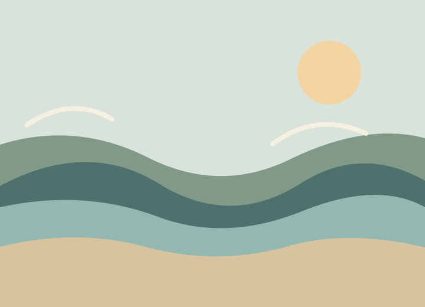
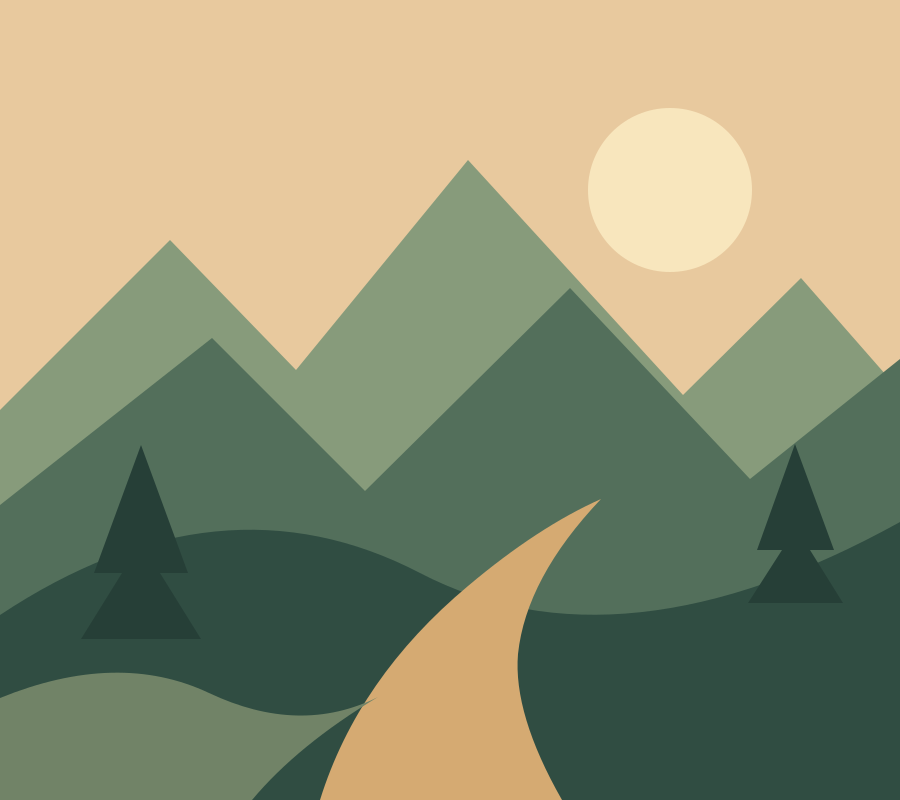
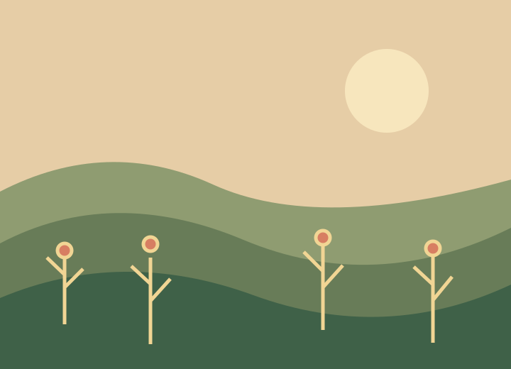
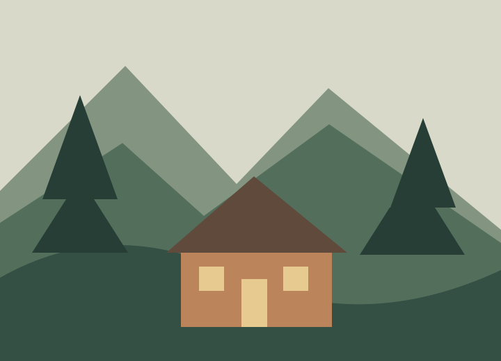

Where the land softens
A morning walk along the edge of the water.
Small observations, open skies, and the places that remind us to slow down. Fieldnotes is an invitation to look a little closer.
Read the latest stories ↗

A morning walk along the edge of the water.

On paying attention to what grows beside the path.

One simple weekend, far from the familiar.